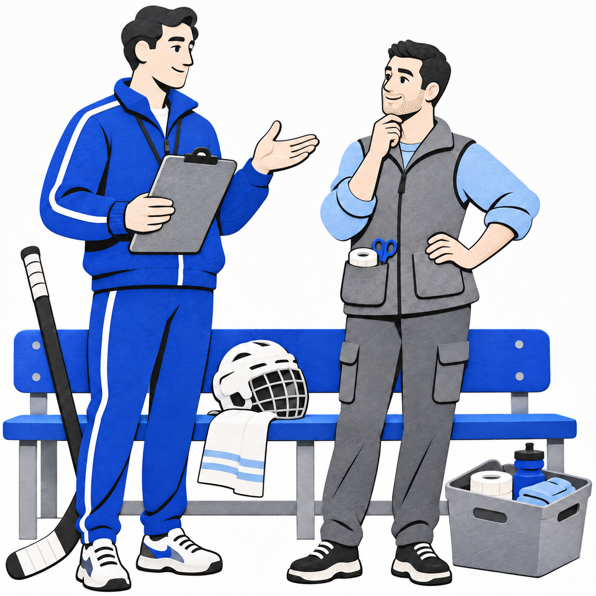
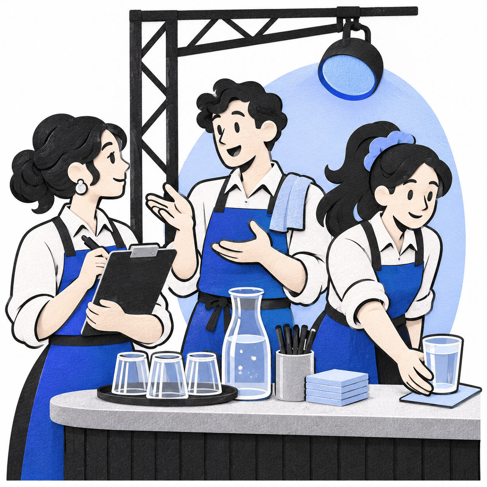

Konflikt
na pracovišti
Hokejový trenér a organizátor akcí VOUT.
Dva rozhovory o pravidlech, práci a vztazích.
Jak konflikt vzniká
Úroveň konfliktu
- Intrapersonální: uvnitř člověka.
- Interpersonální: mezi lidmi.
- Vnitroskupinový: uvnitř týmu.
- Meziskupinový: mezi týmy.
Skrytý → otevřený
Nevyslovená nespokojenost se stává otevřeným sporem, když zazní výtka nebo vznikne střet.
Od práce k osobnímu sporu
Spor o práci se může propojit s osobním napětím. Ani věcný konflikt není automaticky prospěšný.
Pět stylů řešení konfliktu
Dvě osy: sebeprosazení vlastních zájmů × spolupráce při naplňování zájmů druhého.
| Styl | Sebeprosazení / spolupráce | Podstata přístupu |
|---|---|---|
| Konfrontační | Vysoké / nízká | Prosazení vlastního požadavku |
| Kooperativní | Vysoké / vysoká | Hledání řešení pro obě strany |
| Kompromisní | Střední / střední | Vzájemné ústupky |
| Přizpůsobivý | Nízké / vysoká | Upřednostnění zájmů druhého |
| Únikový | Nízké / nízká | Odložení nebo vyhnutí se řešení |
Styl je způsob jednání v situaci, nikoli trvalá nálepka člověka.
Jak vést rozhovor: 5 P
Přijetí
Vyslechnout druhého.
Co se stalo z tvého pohledu?Poznání
Ověřit porozumění.
Rozumím správně, že…?Pocity
Popsat vlastní prožívání.
Mám obavu o fungování týmu.Přání
Vyjádřit potřebnou změnu.
Potřebuji, abychom…Program
Domluvit další krok.
Co uděláme a kdy to ověříme?Mluvit o konkrétním chování a domluvit další krok.
Trenér a alkohol na pracovišti

Hokejový trenér × kustod
Trenér podle chování opakovaně usuzoval, že je kustod v práci pod vlivem alkoholu.
- Na pracovišti platila nulová tolerance alkoholu.
- Předchozí upozornění nevedla k trvalé změně.
- Kustod užívání alkoholu popíral.
Trenér požadoval dodržování pravidla. Kustod problém popíral.
Domluva pomohla pouze dočasně
Pohovor
Připomenutí nulové tolerance a požadavku na nápravu.
Varování
Upozornění na možnost testování i ztráty práce při opakování.
Opakování
Po dočasném zlepšení se podezření vrátilo. Test potvrdil alkohol.
Ukončení
Kustod byl následně propuštěn.
Varování přineslo jen krátkou změnu. Následovalo ukončení spolupráce.
VOUT: někdo pracuje za ostatní

Organizátor studentských akcí
Na akcích VOUT běžně pracuje přibližně sedm barmanů. Část pracovala celý večer, jiní odcházeli nebo si brali přestávky bez domluvy.
Více pracující: dělají práci za ostatní, přesto dostávají podobnou odměnu.
Kritizovaní: vnímají výtky jako nespravedlivé.
Jasné přestávky, role a odměny
Jasnější organizace práce
- Vymezení povinností a přestávek po domluvě podle provozu.
- Manažer baru pro průběžnou komunikaci a pomoc týmu.
- Zpětná vazba po akci pro další organizaci.
Podklady pro rozhodování
- Sledování počtu obsloužených zákazníků.
- Zohlednění těchto údajů při dělení spropitného.
- Individuální rozhovor a prostor ke zlepšení před případným ukončením spolupráce.
Co si organizátor odnesl
Lidé potřebují vědět, co se od nich čeká.
Odpovědnost vedoucího
Vysvětlit práci, zajistit podporu a vyslechnout zpětnou vazbu.
Odpovědnost barmanů
Dodržovat domluvu a řešit přestávky s manažerem baru.
Srovnání přístupů
| Oblast | Leader 1 · trenér | Leader 2 · VOUT |
|---|---|---|
| Jádro problému | Opakované porušení známého pravidla | Rozdílné nasazení a nejasná pravidla |
| První postup | Pohovor a připomenutí hranice | Vyjasnění očekávání a změna organizace |
| Ověřování | Alkoholový test po dalším podezření | Údaje o obsloužených zákaznících |
| Možnost nápravy | Varování před dalším porušením | Individuální rozhovor a prostor ke zlepšení |
| Krajní důsledek | Propuštění kustoda | Ukončení spolupráce v některých případech |
Trenér: jasná hranice pro celý tým
Krátce po odchodu kustoda
Ostatní si dočasně rozdělili jeho úkoly. Příprava vybavení vyžadovala více domluvy.
V týmu se mísila úleva s obavami, jak přísně bude trenér postupovat příště.
Po ustálení provozu
Jasné rozdělení práce obnovilo běžný režim. Lidé věděli, na koho se obracet.
Důvěru v trenéra podpořilo stejné pravidlo pro všechny a dodržení předem oznámeného postupu.
Poučení: personální rozhodnutí musí doprovodit domluva s těmi, kteří zůstávají.
VOUT: méně dohadů během směny
Spolupráce za barem
Barmani si před přestávkou předávali obsluhu. Kolegové nezůstávali na nápor sami.
Spory o odchody řešil manažer hned během směny, místo aby se hromadily do konce večera.
Vztahy a odměňování
Aktivnější lidé cítili větší uznání své práce. Jasná dohoda o spropitném omezila osobní výčitky.
Zpětná vazba po akci dala prostor i problémům s rozdělením práce. Důvěra rostla díky konkrétní reakci organizátorů.
Poučení: férovější provoz stojí na jasných dohodách a dostupném vedoucím.
Jak případy souvisejí s teorií
| Teoretický pohled | Trenér × kustod | VOUT |
|---|---|---|
| Úroveň konfliktu | Interpersonální, vedoucí–podřízený | Uvnitř týmu i vedoucí–podřízený |
| Projev konfliktu | Otevřený spor: podezření a popírání | Postupné napětí, následně otevřené výtky |
| Styl řešení | Převaha prosazení hranice; nejprve prostor k nápravě | Prvky spolupráce; při opakování prosazení důsledku |
| Vazba na 5 P | Přání: dodržet pravidlo. Program: náprava a jasný důsledek. | Poznání: zjistit potřeby. Program: domluvit pravidla směny. |
Porovnáváme jednání v konkrétních situacích, ne osobnost lídrů.
Co má udělat vedoucí
- 01
Pojmenovat problém
Nejasné očekávání, nebo porušení známého pravidla?
- 02
Vyslechnout obě strany
Probrat konkrétní chování a jeho dopad.
- 03
Zvolit postup
Spolupráce, dohoda, nebo jasná hranice podle situace.
- 04
Domluvit další krok
Co se změní, kdo za to odpovídá a kdy to ověříme.
- 05
Hodnotit férově
Vedle výkonu zohlednit i podmínky práce.
- 06
Zapojit tým
Vysvětlit změnu a zajistit, aby práce navazovala.
Kdy je podle vás konflikt vyřešen?
Odborné zdroje
- Školní přednáška. Konflikty na pracovišti — úrovně konfliktu, styly řešení a pomůcka 5 P.
- [K] The Myers-Briggs Company (bez data).History and Validity of the Thomas-Kilmann Conflict Mode Instrument.
Oficiální popis pěti stylů a dvou os; odkazuje na Thomas & Kilmann (1974). - [D] De Dreu, C. K. W., & Weingart, L. R. (2003). Task versus relationship conflict, team performance, and team member satisfaction: A meta-analysis. Journal of Applied Psychology, 88(4), 741–749.
doi:10.1037/0021-9010.88.4.741 - [E] Edmondson, A. (1999). Psychological Safety and Learning Behavior in Work Teams. Administrative Science Quarterly, 44(2), 350–383.
doi:10.2307/2666999